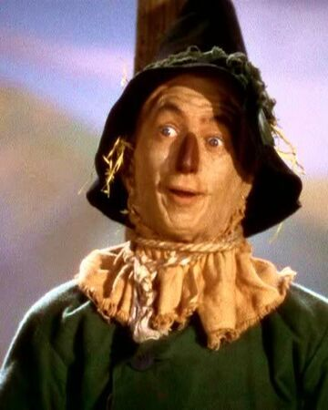

The Wizard of Oz is a Musical
When a tornado rips through Kansas, Dorothy (Judy Garland) and her dog, Toto, are whisked away in their house to the magical land of Oz. They follow the Yellow Brick Road toward the Emerald City to meet the Wizard, and en route they meet a Scarecrow (Ray Bolger) that needs a brain, a Tin Man (Jack Haley) missing a heart, and a Cowardly Lion (Bert Lahr) who wants courage. The wizard asks the group to bring him the broom of the Wicked Witch of the West (Margaret Hamilton) to earn his help.
Friends of Oz
Dorothy
Details about Dorothy go here
Tin Man
Details about Tin Man go here
Cowardly Lion
Details about Cowardly Lion go here
Scarecrow

Details about Scarecrow go here
The Wicked Witch
Details about the Wicked Witch go here
Glenda the Good
Details about the Glenda the Good go here
Oz News
Headline
Characterized by its use of Technicolor, fantasy storytelling, musical score, and memorable characters, The Wizard of Oz was moderately successful upon its original release of August 25, 1939. The film was considered a critical success and was nominated for six Academy Awards, including Best Picture, winning in two categories: Best Original Song for "Over the Rainbow" and Best Original Score by Stothart. While the film was sufficiently popular at the box office, it failed to make a profit for MGM until the 1949 re-release, earning only $3,017,000 on a $2,777,000 budget, not including promotional costs, which made it MGM's most expensive production at that time
Another Headline
The Wizard of Oz has become the source of many quotes referenced in contemporary popular culture. The film ranks often on critics' lists of greatest films of all time, and is the most commercially successful adaptation of L. Frank Baum's work
Yet Another Headline
As Dorothy and the Wizard prepare to depart, the Wizard places the Scarecrow in charge of Emerald City, with the Tin Man and Lion as his aides. Toto sees a cat and leaps from Dorothy's arms. As Dorothy pursues Toto, the balloon departs with the Wizard. Glinda then appears and tells Dorothy that she has always had the power to return home using the ruby slippers. After Dorothy bids the Scarecrow, Tin Man, and Lion farewell, Glinda instructs her to tap her heels together three times and say: "There's no place like home." When Dorothy does, she awakens in her bedroom, surrounded by her family and friends. Everyone dismisses her adventure as a dream, but Dorothy insists it was real, noting that she saw them in Oz. She says she will never run away again and declares: "There's no place like home!", closing the movie.